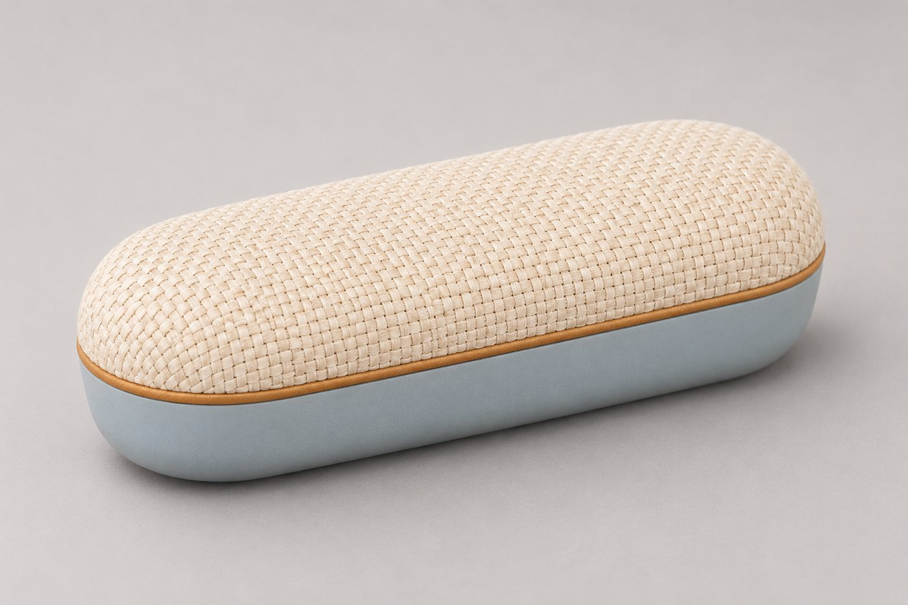

Briefs
Design outputs, each as a page: fabric and product briefs, product breakdowns, line analyses, visualizations, and projects that bring several disciplines together.
 BlanketDesign Brief · A woven throw with a stylized bird figure in gold, rust and burgundy: style and mood for product development.
BlanketDesign Brief · A woven throw with a stylized bird figure in gold, rust and burgundy: style and mood for product development. Flower Knit JacketDesign Brief · A black knit zip jacket with one large red flower jacquard: style and mood for product development.
Flower Knit JacketDesign Brief · A black knit zip jacket with one large red flower jacquard: style and mood for product development.
Stadium CaseDesign Brief · A capsule-shaped case with a woven lid and a matte molded base: style and mood for product development. SweaterDesign Brief · A relaxed crew neck knit with a soft, blurred ikat-like pattern in rust and brown: style and mood for product…
SweaterDesign Brief · A relaxed crew neck knit with a soft, blurred ikat-like pattern in rust and brown: style and mood for product…